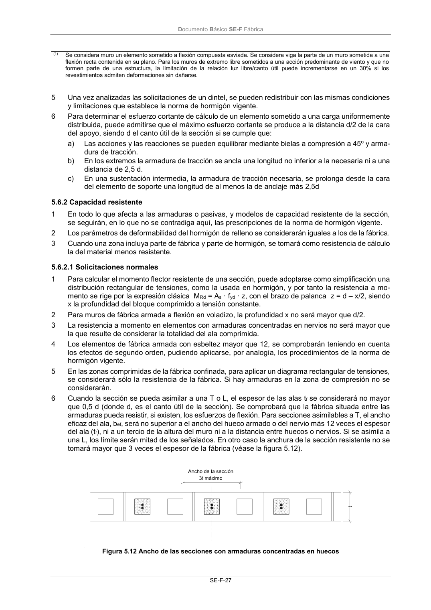

DB-SE-F Fábrica · edición 2019-12-20 · capa oficial
Documento DB-SE-F-oficial · SHA-256 del PDF e3e0805c3b4c307519c26dc34c3fdbf143d842edd013c91b0f52d2c73403d91c
Copia fiel del PDF fuente · Fuente oficial
Ficha de la disposición en la fuente oficial
Formatos: JSON del segmento · Markdown
5.6.2 Capacidad resistente 1 En todo lo que afecta a las armaduras o pasivas, y modelos de capacidad resistente de la sección, se seguirán, en lo que no se contradiga aquí, las prescripciones de la norma de hormigón vigente. 2 Los parámetros de deformabilidad del hormigón de relleno se considerarán iguales a los de la fábrica. 3 Cuando una zona incluya parte de fábrica y parte de hormigón, se tomará como resistencia de cálculo la del material menos resistente.
